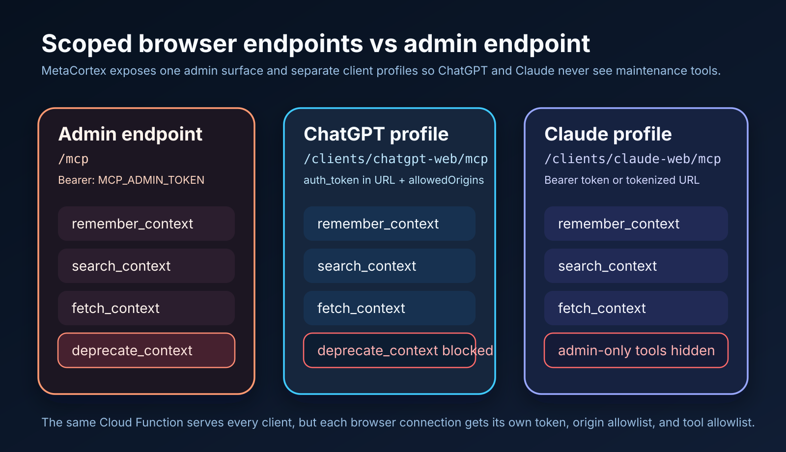

MetaCortex
The Serverless, Long-Term Memory Core designed for autonomous AI agents and cross-client developer workflows.
Press Right Arrow or Space to navigate.
The Chatbot Memory Trap
Consumer chatbot built-in memories fail developer requirements in three critical ways:
Walled Gardens
Siloed vendor locks. A memory saved in ChatGPT is invisible to Claude Desktop, locked out of Cursor, and entirely unavailable to your terminal-based scripts.
The Black Box
You don't own your knowledge. No API to query, back up, export, or audit your private corporate knowledge. You cannot clean or restore states.
The Brain & Body Metaphor
Dividing long-term memory logic from local physical environment execution.
-
✓
The Brain: MetaCortex Cloud-hosted, secure serverless memory core holding unified knowledge representations.
-
✓
The Body: Nanobot / OpenClaw Local autonomous agents that run on your machine, edit your code, execute commands, and use the Brain to recall things like:
- decisions
- preferences
- goals
Built on Open Standards
A highly performant serverless stack with infinite horizontal scaling and zero idle hosting fees.
-
→
Multimodal Image Normalization Gemini models normalize wireframes and screenshots into unified text before indexing.
-
→
Timing-Safe Token Auth Allows multiple client keys, secure Bearer tokens, and origin check filters.
Watching It Work Live
See how a local terminal agent or standard chat interface binds to the serverless MCP core.
-
⚡
Real-time Recall & Write Writing a memory compiles local variables and stores the vector embedding instantaneously.
-
⚡
High-Speed Retrieval Under-the-hood vector indexing returns near-zero latency semantic matches.
Inside the Active Chat Session
How developers audit, query, and verify memory scopes and client endpoints.

Auditing semantic search parameters, query variables, and direct Firestore memory scores.

Client profile overrides, custom domain CORS permissions, and allowed tool lists configuration.
Scaling Beyond the Context Limits
Dumping raw directories into giant context windows introduces three modern architectural bottlenecks:
Context Congestion
Massive contexts increase noise and dilute LLM attention, leading to reasoning degradation, increased processing latency, and huge token bills.
Session Divergence
Frontend, backend, and infrastructure threads exist in parallel silos. Divergent threads have no way to synchronize critical design changes.
Knowledge Decay
Without pruning, long chat records contain stale, contradictory decisions. The model struggles to resolve outdated code choices.
LLM-Driven Consolidation
MetaCortex utilizes an isolated background thread to actively clean and deduplicate your knowledge tree.
-
✓
The WIP Queue Passive, raw memories are initially written to the database under the `wip` state.
-
✓
Automated LLM Merges A daily cron worker compiles WIP threads and directs Gemini to merge them into a single canonical active fact sheet.
-
✓
Soft-Deprecation Links Deprecated source files remain auditable via a git-like `superseded_by` relationship pointer.

Granular Security Bounds
Enforcing clean permissions at the HTTP boundary via client profiles.
-
🔑
The 5-Tool Core API `remember_context`, `search_context`, `fetch_context`, `deprecate_context`, and `consolidate_context`.
-
🔑
Scoped Endpoints Chat bots can only read/write `"active"` memories on customized scoped client paths. They are barred from administrative deletion.
Deploy Instantly via Journey Kit
Install, provision, and configure the entire memory layer with a single terminal command.
-
🚀
The Package Standard Pre-compiled, pre-tested slice containing Functions, Firestore rules, and indexes.
-
🚀
Guided Configuration Journey automatically guides you through Firebase project setup, Gemini API key linkage, and client profile creation.
Give Your Agents a Durable Brain
Unlock unified state tracking, eliminate context congestion, and bridge silos across all developer tools.
- 1. Install the MetaCortex package: `journey install agentnightshift/...`
- 2. Follow the prompt commands to configure your Gemini API Key.
- 3. Open `journey-kit/README.md` to instantly plug in ChatGPT, Claude, and your local Nanobot agents.
Ready to integrate? Let's build!